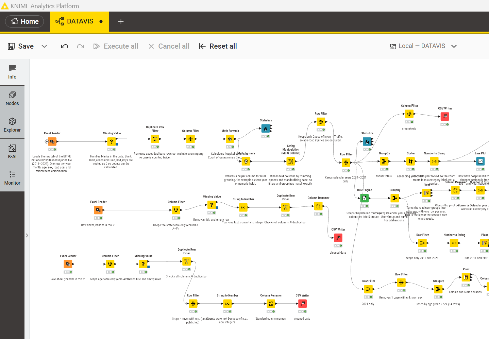

Tools used for data processing
KNIME Analytics Platform was used to prepare the source Excel workbooks. The overall workflow has three cleaning branches: national traffic injuries, state and territory data, and First Nations age-group data. Each branch ends with a CSV Writer node that exports a cleaned dataset.
Excel Reader imports the tables. Column Filter, Missing Value and Duplicate Row Filter select the required fields, handle blank values and check repeated rows. Conversion and renaming nodes standardise the data, while Row Filter selects the required records. In the national branch, Math Formula calculates hospitalisations as total cases minus recorded deaths in care.

Cleaned CSV outputs
-
National traffic injuries:
cleaned_national_traffic.xlsx.csv. Text is tidied, traffic records and years 2011–2021 are retained, and the derived hospitalisation measure is included. BlankDied_casesandDied_bed_daysfields are filled with zero. -
States and territories:
cleaned_state_traffic.xlsx.csv. The state table is selected, title and empty rows are removed, year values are converted to numbers, and column names are standardised. -
First Nations age groups:
cleaned_first_nations_age.xlsx.csv. The age-group table is selected, title and empty rows are removed, and four rows markedn.p.(not published) are filtered out before count values are converted to numbers. Unpublished values are not set to zero.